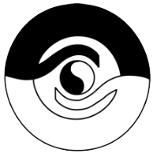

Arrangement
TTU Instruktørseminar Poomse

Det er med glæde at kunne invitere til en weekend med Poomse som tema. Denne weekend vil give deltageren mulighed for at lære nye aspekter af Poomse.
Deltagerne vil stifte bekendskab med de fleste basale mønster færdigheder, samt hjælpe den enkelte utøver / Instruktør med flere værktøjer til at kunne hjælpe sig selv og sine elever til at forstå poomse utførelse, opbygning, flow, teknisk utførelse, samt de psykiske aspekter der træder i kraft før, under og efter poomse utførelse.
Der vil i denne weekend være rig mulighed for at lære nye poomse, få justeret kendte poomse, samt at se mønster-utførelse fra helt nye vinkler.
Kurset er henvendt til alle med interesse for Poomse, uanset om man deltager i Poomse konkurrence eller bare ønsker inspiration, justeringer og nye værktøjer til sin træning / undervisning.
Kurset er for alle medlemmer med 4.cup eller høyere grad.
Besøk http://www.ttu.no/instruktoerseminar-poomse.6016933-412993.html for mer info.